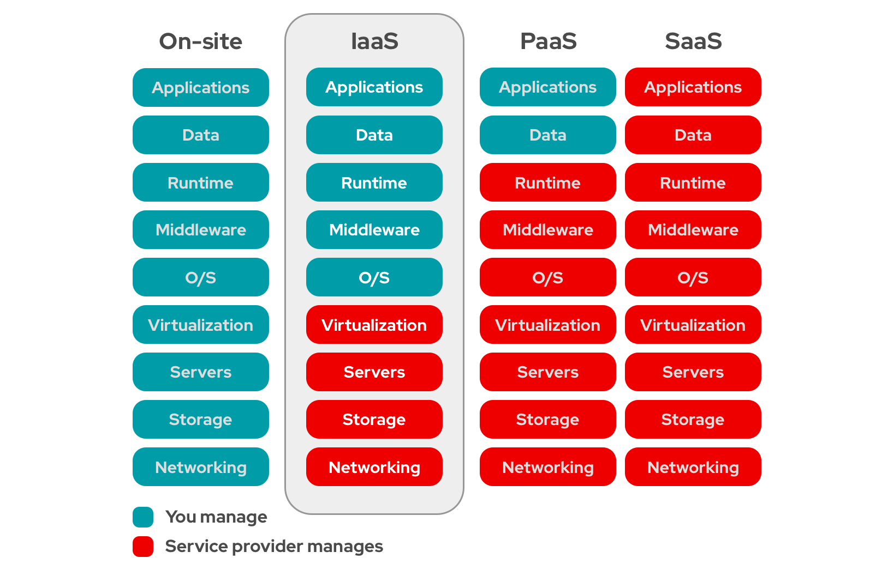

Internet of Things 2024–25
| Point-to-point | Directe verbinding tussen twee knooppunten |
| Bus | Eén gedeelde communicatielijn |
| Ring | Elk knooppunt met twee buren verbonden |
| Star | Alle knooppunten via centrale hub |
| Tree | Hiërarchische sterstructuur |
| Mesh | Volledige redundantie via meerdere verbindingen |
| Type | Bereik | Voorbeeldtechnologie | Toepassing |
|---|---|---|---|
| Nano Network | Microscopisch | IEEE P1906.1 | Biomedisch, onderzoek |
| Body Area Network (BAN) | Rond lichaam | IEEE 802.15.6 | Wearables |
| Personal Area Network (PAN) | Tot 10 m | Bluetooth, Zigbee | Persoonlijke apparaten |
| Local Area Network (LAN) | Gebouw | Ethernet, Wi-Fi | Bedrijven, scholen |
| Metropolitan Area Network (MAN) | Stad | Metro Ethernet | Stedelijke netwerken |
| Wide Area Network (WAN) | Land/wereldwijd | LoRaWAN, MPLS | Internet, IoT |
| Model | Kernidee |
|---|---|
| Client–Server | Server levert diensten aan clients |
| Peer-to-Peer | Gelijke apparaten communiceren rechtstreeks |
| Type | Kenmerken |
|---|---|
| Passief | Geen batterij, korte afstand (1–10 cm) |
| Semi-actief | Zendt enkel bij inkomend signaal |
| Actief | Met batterij, bereik 10–100 m |
| Chiploos | Geen ID, werkt met reflectiepatronen |
| + | − |
|---|---|
| Meer info, herprogrammeerbaar | Beperkte leesafstand |
| Niet zichtbaar nodig | Storingen bij metaal |
| Efficiënte inventarisatie | Gebrek aan standaardisatie |
| Bluetooth | 2.4 GHz | Tot 10 m | Apparaatkoppeling |
| Wi-Fi | 2.4–5 GHz | Tot 100 m | LAN-connectiviteit |
| Zigbee | 2.4 GHz | Tot 100 m | Smart home |
| Z-Wave | 868 MHz | Tot 30 m | Domotica |
| LoRa | 433/868 MHz | Tot 15 km | IoT-sensoren |
| Generatie | Jaar | Snelheid | Kenmerken |
|---|---|---|---|
| 1G | 1980s | 2.4 kb/s | Analoog spraak |
| 2G | 1990s | 300 kb/s | SMS, MMS |
| 3G | 2000s | 2 Mb/s | Mobiel internet |
| 4G | 2010s | 100 Mb/s | Streaming, video |
| 5G | 2020s | Tot 10 Gb/s | Ultra-snel, IoT |
| Laag | Voorbeelden |
|---|---|
| Applicatie | HTTP, MQTT, CoAP, FTP, SMTP |
| Transport | TCP, UDP |
| Netwerk | IPv4, IPv6 |
| Datalink | Ethernet, Wi-Fi |
| Kenmerk | TCP | UDP |
|---|---|---|
| Type | Verbindingsgericht | Verbindingsloos |
| Betrouwbaarheid | Hoog, met foutcontrole | Laag |
| Snelheid | Lager | Hoger |
| Gebruik | Web, e-mail | Streaming, games |
| 200 | OK |
| 403 | Forbidden |
| 404 | Not Found |
| 500 | Internal Server Error |
| 503 | Service Unavailable |
| Protocol | Eigenschappen |
|---|---|
| MQTT | Lichtgewicht, TCP-gebaseerd, publish/subscribe |
| CoAP | REST-achtig, UDP, voor kleine apparaten |
| AMQP | Betrouwbare messaging, TLS beveiliging |
| DDS / WebSockets | Real-time communicatie |
“as a Service”-modellen

| Model | Beheer door gebruiker | Voorbeeld |
|---|---|---|
| IaaS | VM's, netwerken | AWS EC2 |
| PaaS | Applicatieontwikkeling | Google App Engine |
| SaaS | Gebruik software | Microsoft 365 |
| BaaS | Back-end diensten | Firebase |
| Type | Functie |
|---|---|
| Device Platform | Sensoren, actuatoren, gateways |
| Connectivity Platform | Communicatie tussen devices en cloud |
| IoT Platform | Devicebeheer, dataverwerking, analytics |